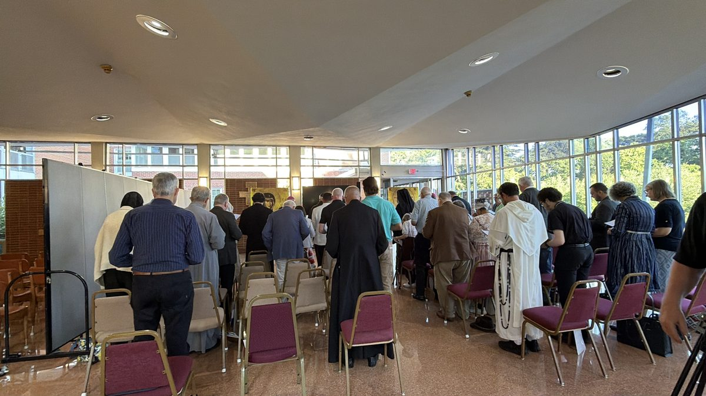

Support the Institute
Make a gift to the Institute
Gifts build the faculty, the classroom, and the library that let Catholics and Orthodox study together.
Three days of shared prayer and liturgy at the Saint John Paul II Shrine, July 2026.
Our goal
An Endowed Chair in Ecumenical Studies
A permanent, named chair to anchor the Master of Arts in Ecumenical Studies, the first degree of its kind in the United States. An endowment pays the scholar who holds it, year after year, so the program never depends on a single season of giving.
The chair can carry the name of a donor, a family, or someone the donor wishes to honor. To talk about the chair or another major gift, please write to jackfigel@ol-institute.com or call +1 703-691-8585.
The Founding Campaign
$1,500,000 to open the doors and endow the chair
The Founding Campaign endows the Chair in Ecumenical Studies and pays for the first classes, the people who teach them, and the tools students need.
$0 raised of $1,500,000
- $375,000
- $750,000
- $1,125,000
The campaign is just beginning. Be among the first to give.
Where gifts go
What a gift supports
Instructors
Paying the Catholic and Orthodox scholars who teach the Institute’s courses, retreats, and lectures.
Lecture materials
Readings, course books, and recorded lectures for every student, including the Kallistos lectures.
Technology
The online classroom, streaming, and digital library that let students join from anywhere.
How to give
Give through the Orientale Lumen Foundation
Gifts to the Institute are made through the Orientale Lumen Foundation, its parent nonprofit. Please note “OL Institute” with your gift, and name the chair, instructors, materials, or technology if you would like it used for one of them.
 Likoudis Legacy Foundation
Likoudis Legacy Foundation